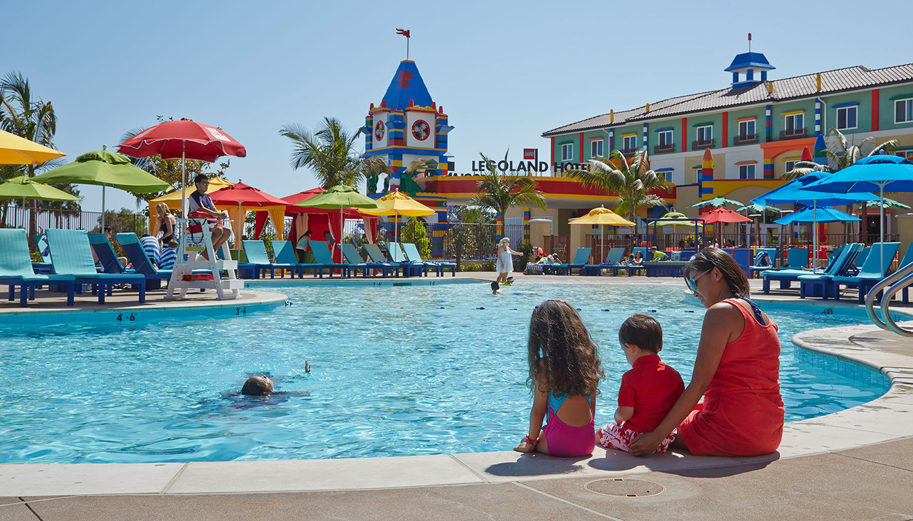

LEGOLAND California, located in Carlsbad, is a theme park and resort that offers a world of fun and adventure for LEGO enthusiasts of all ages. It is a place where imagination comes to life and creativity knows no bounds.
Step into the vibrant and colorful world of LEGO at LEGOLAND California. The park features a variety of attractions, rides, and shows designed to entertain and engage LEGO lovers of all generations. From thrilling roller coasters to interactive LEGO-building experiences, there's something for everyone to enjoy.
Explore Miniland, a LEGO replica of famous landmarks from around the world. Marvel at the intricate details and craftsmanship as you stroll through LEGO versions of cities, including San Francisco, New York City, and Las Vegas. Discover iconic landmarks like the Golden Gate Bridge, the Statue of Liberty, and the Las Vegas Strip, all made entirely out of LEGO bricks.
LEGO enthusiasts will delight in the numerous LEGO-themed attractions and activities. Build and race your own LEGO cars, go on a treasure hunt in the LEGO deep sea, or embark on a LEGO-themed ride adventure. Let your imagination run wild as you create and play with LEGO bricks in designated play areas, where the possibilities are endless.
LEGOLAND California also offers a water park where you can cool off and have fun in the sun. Splash around in the wave pool, zip down water slides, or float along the lazy river. With water play areas and attractions suitable for all ages, it's a perfect way to enjoy a refreshing break from the California sunshine.
Don't miss the opportunity to meet your favorite LEGO characters and enjoy live shows featuring acrobats, performers, and entertainers. From LEGO-themed shows to exciting stage performances, there's always something happening at LEGOLAND California to keep the whole family entertained.
The park also offers a variety of dining options, including LEGO-themed restaurants and food stands. Enjoy a range of delicious meals, snacks, and treats to satisfy your hunger while immersed in the LEGO world.
LEGOLAND California is a place where creativity and play come together to create magical experiences for the whole family. It's a destination that celebrates the joy of building, imagination, and endless possibilities. Whether you're a LEGO enthusiast or simply looking for a fun-filled day of adventure, LEGOLAND California is an absolute must-visit.